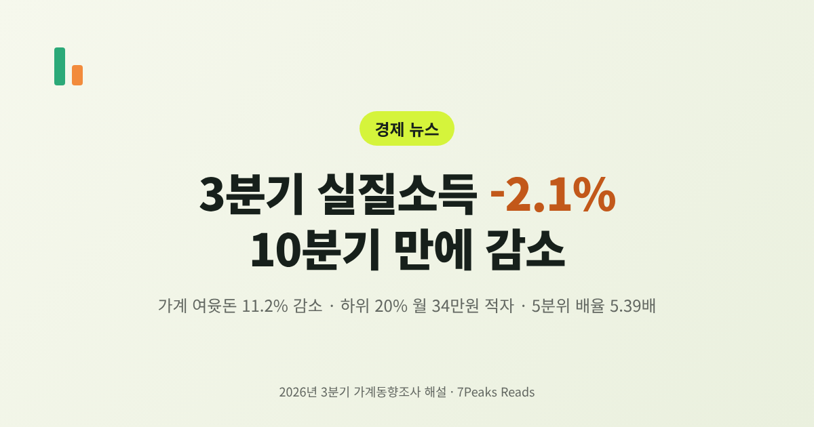
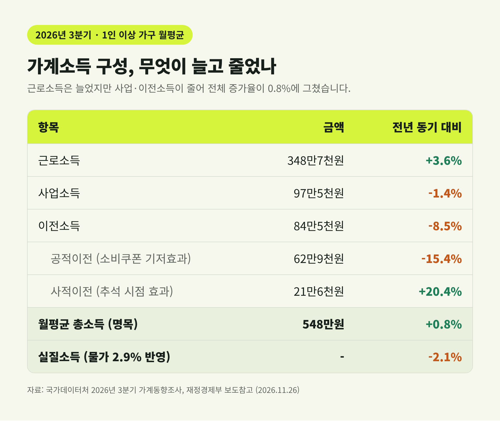
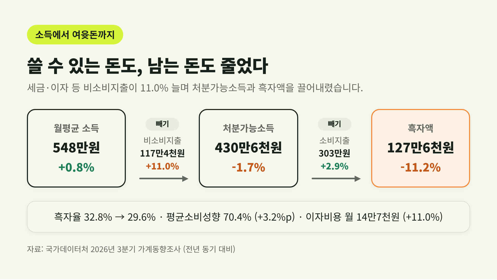
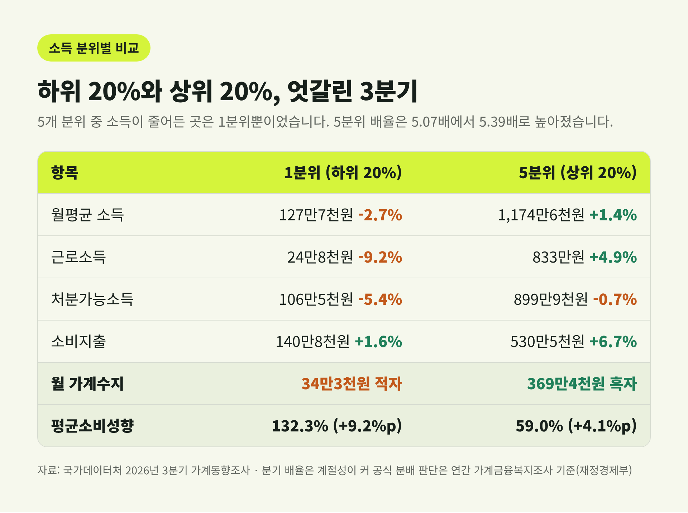
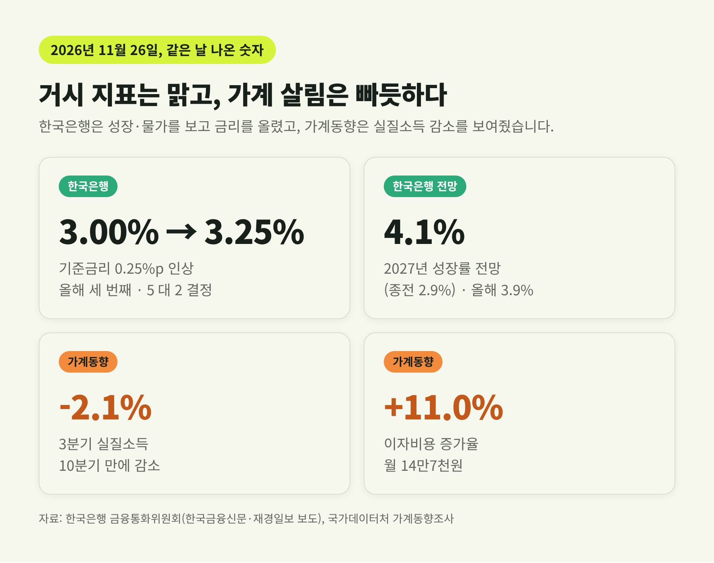
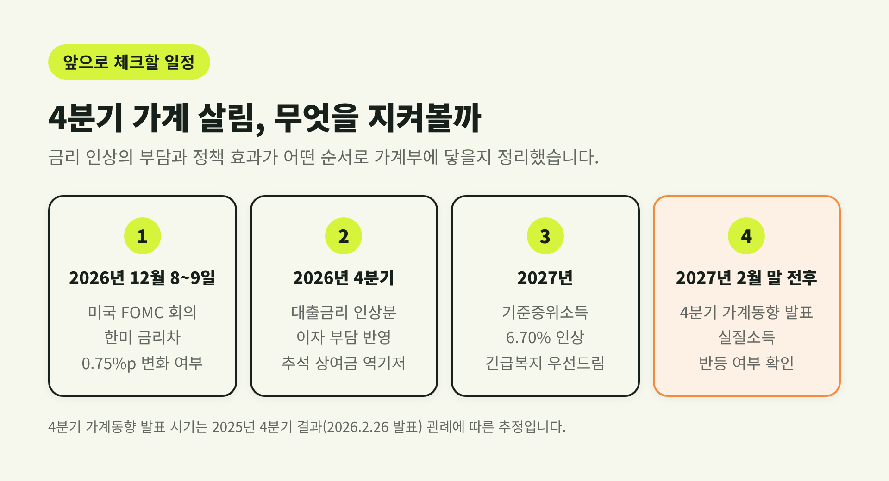

3분기 실질소득 2.1% 감소, 가계 여윳돈 줄고 격차 커졌다

이번 글에서는 국가데이터처가 11월 26일 내놓은 2026년 3분기 가계동향조사를 정리해 보겠습니다. 명목소득은 늘었지만 물가를 빼면 줄었고, 쓸 수 있는 돈과 여윳돈도 함께 줄었습니다. 같은 날 한국은행이 기준금리를 올린 만큼, 두 소식을 함께 읽어야 그림이 온전해집니다.
세 줄 요약
- 3분기 월평균 가구소득은 548만원으로 0.8% 늘었지만, 실질소득은 2.1% 줄어 10분기 만에 감소로 돌아섰습니다.
- 처분가능소득은 1.7%, 흑자액은 11.2% 줄었습니다. 하위 20% 가구는 매달 34만원가량 적자였습니다.
- 지난해 소비쿠폰의 기저효과가 가장 큰 원인이지만, 이자·세금 부담 증가와 분위별 격차 확대는 따로 살펴볼 대목입니다.
이 글은 공개된 통계와 보도를 바탕으로 한 정보 제공 목적의 해설이며, 특정 금융상품 가입이나 투자를 권유하지 않습니다.
■ 무슨 일이 있었나 — 숫자로 본 3분기 가계
1인 이상 가구의 월평균 소득은 548만원이었습니다. 1년 전 543만9천원보다 0.8% 많습니다. 명목소득은 2023년 3분기 이후 13분기째 늘고 있습니다.
문제는 속도입니다. 증가율이 지난해 3분기 3.5%, 올해 2분기 4.5%였다가 0.8%로 주저앉았습니다. 같은 기간 소비자물가는 2.9% 올랐습니다. 그 결과 실질소득은 2.1% 줄었습니다. 실질소득이 뒷걸음질한 것은 2024년 1분기(-1.6%) 이후 10분기 만입니다.
소득의 구성을 나눠 보면 방향이 엇갈립니다.
- 근로소득: 348만7천원, 3.6% 증가 (실질 기준으로도 0.6% 증가)
- 사업소득: 97만5천원, 1.4% 감소
- 이전소득: 84만5천원, 8.5% 감소 (공적이전 -15.4%, 사적이전 +20.4%)
월급은 늘었는데 자영업 벌이와 정부 지원금이 줄어 전체를 끌어내린 구조입니다.

지출 쪽 숫자도 함께 보셔야 합니다. 가계지출은 420만4천원으로 5.1% 늘었습니다. 이 가운데 소비지출은 303만원으로 2.9% 늘었습니다. 물가를 감안한 실질 소비지출은 0.0%, 즉 제자리였습니다. 돈은 더 냈지만 실제로 사들인 양은 1년 전과 같았다는 뜻입니다.
가계지출 증가율이 소비지출보다 훨씬 높은 이유는 비소비지출에 있습니다. 세금·이자·연금·보험료 같은 비소비지출이 117만4천원으로 11.0% 늘었습니다.
■ 왜 중요한가 — '쓸 수 있는 돈'과 '남는 돈'이 함께 줄었다
소득에서 비소비지출을 뺀 처분가능소득은 430만6천원으로 1.7% 줄었습니다. 처분가능소득이 감소한 것은 2023년 2분기 이후 13분기 만입니다.
여기서 소비지출을 다시 빼면 흑자액이 나옵니다. 3분기 흑자액은 127만6천원이었습니다. 지난해 같은 분기 143만7천원에서 11.2%, 금액으로는 매달 16만1천원이 줄었습니다. 흑자율은 32.8%에서 29.6%로 내려갔습니다.
반대로 평균소비성향은 70.4%로 3.2%포인트 올랐습니다. 2023년 2분기 이후 가장 큰 상승폭입니다. 번 돈 가운데 소비에 쓰는 비중이 커졌다는 의미인데, 이번에는 씀씀이가 커져서라기보다 쓸 수 있는 돈 자체가 줄어든 영향이 큽니다.

비소비지출의 세부 항목은 이렇습니다.
- 이자비용: 월 14만7천원, 11.0% 증가
- 경상조세: 8.0% 증가
- 연금기여금: 7.8% 증가
- 사회보험료: 3.4% 증가
- 가구 간 이전지출: 30.0% 증가
가구 간 이전지출이 크게 뛴 데는 올해 추석이 9월로 당겨진 영향이 섞여 있습니다. 반면 이자비용 증가는 계절 요인으로 설명하기 어렵습니다. 금리가 오르는 국면에서 가계가 이미 체감하고 있는 부담입니다.
■ 배경 ① — 소비쿠폰 기저효과와 추석이라는 두 변수
가장 큰 원인은 지난해의 숫자입니다. 2025년 3분기에는 '민생회복 소비쿠폰'이 지급됐습니다. 1차로 7월 21일부터 전 국민에게 1인당 15만~45만원이, 2차로 9월 22일부터 소득 하위 90%에게 1인당 10만원이 지급됐습니다. 그 덕에 당시 공적이전소득은 40.4% 급증했습니다.
예전엔 쿠폰 덕에 가계소득이 3.5% 늘었습니다. 지금은 그 쿠폰이 빠지면서 공적이전소득이 15.4% 줄었습니다.
박순옥 국가데이터처 가계수지동향과장은 지난해 쿠폰 규모가 "상당했다"며, 그 기저효과가 3분기 소득 둔화를 주도했다고 설명했습니다. 연금 2.1% 인상, 아동수당 대상 확대(만 8세까지), 농어촌 기본소득 지역 확대(10곳→17곳) 같은 플러스 요인이 있었지만 빈자리를 메우기엔 부족했습니다.
두 번째 변수는 추석입니다. 지난해 추석은 10월, 올해는 9월이었습니다. 명절 상여금이 3분기로 들어오면서 근로소득은 힘을 받았습니다. 반대로 연휴로 영업일이 사흘 줄면서 사업소득에는 불리하게 작용했습니다. 사적이전소득 20.4% 증가도 같은 달력 효과로 풀이됩니다.
다만 모든 것을 기저효과로 돌리기는 어렵습니다. 박 과장도 사업소득 감소는 기저효과 같은 단일 요인으로 보기 어렵다며 사업비용, 금리, 대면 업종 카드 사용 감소를 함께 언급했습니다. 자영업 쪽의 부진은 일시적 요인만으로 설명되지 않는다는 신호로 읽힙니다.
■ 배경 ② — 하위 20%만 소득이 줄었다
분위별로 나누면 그림이 더 선명해집니다. 5개 분위 가운데 소득이 줄어든 곳은 하위 20%인 1분위 하나뿐이었습니다.
- 1분위 소득: 127만7천원, 2.7% 감소
- 2~4분위 소득: 각각 1.7%, 0.5%, 0.3% 증가
- 5분위(상위 20%) 소득: 1,174만6천원, 1.4% 증가
격차가 가장 크게 벌어진 곳은 근로소득입니다. 1분위 근로소득은 24만8천원으로 9.2% 줄었습니다. 5분위 근로소득은 833만원으로 4.9% 늘었습니다. 국가데이터처는 1분위에서 일하는 사람이 있는 가구 비중이 줄고 무직 가구가 늘어난 점을 원인으로 들었습니다.

1분위 가구의 처분가능소득은 106만5천원(-5.4%)인데, 소비지출은 140만8천원(+1.6%)이었습니다. 매달 34만3천원의 적자가 난 셈입니다. 평균소비성향은 132.3%로 9.2%포인트 높아졌습니다. 식료품과 주거·수도·광열비만으로 소비의 40.7%를 차지했습니다. 줄일 수 없는 지출이 대부분이라는 뜻입니다.
같은 기간 5분위는 월 369만4천원 흑자를 냈고, 소비지출도 6.7% 늘렸습니다. 전체 소비가 2.9% 늘어난 데에는 상위 가구의 씀씀이가 상당 부분 기여한 것으로 보입니다.
상위 20%의 소득을 하위 20%의 소득으로 나눈 '균등화 처분가능소득 5분위 배율'은 5.39배였습니다. 지난해 3분기 5.07배에서 0.32배 높아졌습니다. 숫자가 클수록 격차가 크다는 뜻입니다.
다만 해석에는 단서가 붙습니다. 재정경제부는 분기 소득이 계절성과 변동성이 커 이 배율을 신중히 봐야 하며, 공식적인 분배 판단은 연간 「가계금융복지조사」를 기준으로 해야 한다고 밝혔습니다. 지난해 3분기에는 쿠폰 덕에 1분위 소득이 11.0% 늘고 배율이 0.62배 개선됐던 만큼, 올해의 악화에도 기저효과가 섞여 있다는 점은 감안할 필요가 있습니다.
■ 배경 ③ — 같은 날 기준금리 3.25%, 가계에는 이자 부담
가계동향이 나온 11월 26일, 한국은행 금융통화위원회는 기준금리를 연 3.00%에서 3.25%로 0.25%포인트 올렸습니다. 7월과 8월에 이은 올해 세 번째 인상이며, 2024년 11월 이후 가장 높은 수준입니다. 위원 5명이 찬성했고 황건일·이수형 위원은 동결 의견을 냈습니다.
한은이 금리를 올린 이유는 가계동향과 결이 다릅니다. 반도체 중심의 수출이 강하고, 올해 수출은 사상 처음 1조달러를 넘었습니다. 3분기 실질 GDP는 전기 대비 1.0% 늘었습니다. 한은은 올해 성장률 전망을 3.3%에서 3.9%로, 내년은 2.9%에서 4.1%로 크게 올렸습니다. 반면 중동 전쟁 장기화로 유가가 높고, 10월 소비자물가는 2.8%로 목표치 2%를 웃돌고 있습니다. 신현송 총재는 고유가 장기화로 물가 안정에 더 중점을 둘 필요가 있다고 말했습니다.

거시 지표는 좋은데 가계 살림은 빠듯한 장면입니다. KDI도 11월 경제동향에서 성장은 양호하지만 소비 개선은 완만하며, 반도체 호황에 따른 소득 증가가 가계 전반으로 퍼지는 흐름이 뚜렷하지 않다고 진단했습니다. 3분기 민간소비는 전기 대비 0.2% 줄었습니다.
금리 인상은 이 간극에 부담을 더합니다. 가계동향에서 이자비용은 이미 11.0% 늘었습니다. 은행 신규 가계대출 금리는 9월 4.96%였고, 일부 보도에 따르면 10월에는 5.02%로 5%대에 올라섰습니다. 한은 분석으로는 대출금리가 0.5%포인트 오르면 차주 1인당 연간 이자가 34만원, 전체로는 6조7천억원 늘어납니다. 기준금리 인상이 대출금리에 반영되기까지는 시차가 있으므로, 이번 인상의 부담은 4분기 이후 가계부에 본격적으로 나타날 가능성이 큽니다.
■ 앞으로 전망 — 4분기와 내년에 볼 것들
4분기에는 상반된 힘이 함께 작용할 수 있습니다.
먼저 기저효과는 다소 약해질 수 있습니다. 지난해 4분기 공적이전소득 증가율은 5.4%로, 3분기의 40.4%보다 훨씬 낮았습니다. 비교 기준이 덜 높은 만큼 이전소득의 감소폭은 줄어들 여지가 있습니다.
반대로 추석 효과는 거꾸로 돌아옵니다. 지난해에는 10월 추석으로 4분기에 상여금이 몰렸지만, 올해는 3분기로 당겨졌습니다. 4분기 근로소득 증가율은 그만큼 낮게 나올 수 있습니다. 여기에 금리 인상에 따른 이자 부담과 고유가가 겹칩니다. 이는 공개된 숫자를 바탕으로 한 해석이며, 확정된 전망은 아니라는 점을 밝혀 둡니다.
정책 대응도 지켜볼 대목입니다. 정부는 양극화 대응 TF를 꾸려 제도 개선을 추진하고, 일자리·서민금융·주거 3대 민생 프로젝트를 먼저 진행하겠다고 밝혔습니다. 2027년 4인 가구 기준중위소득은 역대 최대인 6.70% 오르고, 위기 가구에 30만원을 즉시 지원하는 긴급복지 '우선드림'도 새로 생깁니다.

통화정책의 방향도 변수입니다. 한은 금통위원들의 6개월 뒤 금리 전망 점도표는 3.50%가 8명, 3.75%가 7명, 3.25%가 6명으로 추가 인상 쪽에 무게가 실렸습니다. 미국 연준은 12월 8~9일 회의를 앞두고 있습니다. 성장 전망이 밝아질수록 금리는 더 오를 수 있고, 그 비용은 대출이 많은 가계와 소득이 약한 가계에 먼저 닿습니다.
4분기 가계동향은 관례대로라면 내년 2월 말 전후에 발표될 것으로 보입니다. 그때 확인할 것은 세 가지입니다. 실질소득이 다시 플러스로 돌아오는지, 1분위 근로소득 감소가 멈추는지, 이자비용 증가세가 얼마나 가팔라지는지입니다.
정리하면 이렇습니다. 이번 3분기 실질소득 감소의 상당 부분은 지난해 소비쿠폰이 만든 높은 기준선 때문입니다. 그 점에서 숫자를 지나치게 비관적으로 읽을 필요는 없습니다. 하지만 하위 가구의 근로소득 감소, 늘어나는 이자 부담, 정체된 실질 소비는 기저효과만으로 설명되지 않습니다.
"경제는 커지는데 가계의 여윳돈은 줄었다."
이번 통계가 남긴 질문은 성장의 온기가 언제, 누구에게까지 닿느냐입니다. 다음 분기 숫자가 그 답의 첫 부분이 되기를 바랍니다.
이 글은 정보 제공 목적이며 투자 권유가 아닙니다. 금리·대출 관련 결정은 본인의 상황에 맞게 금융기관 상담 등을 거쳐 판단하시기 바랍니다.
참고자료
- 헤럴드경제, 「소득 0.8% 늘 때 지출 5.1% 뛰었다…가계 여윳돈 11.2% 급감」 (2026-11-26) — https://biz.heraldcorp.com/article/10950115
- 서울경제, 「월급은 올랐는데 쓸 돈은 줄었다…올 3분기 실질소득 10분기 만에 감소 전환」 (2026-11-26) — https://m.sedaily.com/article/20119270
- 매일노동뉴스, 「올해 3분기 근로소득 격차 벌어졌다」 (2026-11-27) — https://www.labortoday.co.kr/news/articleView.html?idxno=237959
- 뉴스프리존, 「3분기 가계 실질소득 2.1% 감소···소비 여력 악화」 (2026-11-26) — https://www.newsfreezone.co.kr/news/articleView.html?idxno=721524
- 이투데이, 「'소비쿠폰 기저효과에'⋯3분기 가계 실질소득 10분기 만에 뒷걸음」 (2026-11-26) — https://www.etoday.co.kr/news/view/2653233
- 산업종합저널, 「3분기 가계 실질소득 2.1% 감소…하위 20% 가구 월평균 34만 원 적자」 (2026-11-26) — https://industryjournal.co.kr/news/248282
- 재정경제부 보도참고 「2026년 3/4분기 가계동향조사 결과」 전재본 (2026-11-26) — https://dazabi.com/insurance_magazine/article.php?id=48373
- 한국금융신문, 「올해 마지막 한은 금통위, 기준금리 3.25%로 인상」 (2026-11-26) — https://www.fntimes.com/html/view.php?ud=202611261110132637179ad43907_18
- 재경일보, 「한은 기준금리 3.25%로 인상…내년 성장률 전망 4.1%」 (2026-11-28) — https://news.jkn.co.kr/post/1128900
- 뉴스1, 「[전문] 한국은행 금융통화위원회 11월 통화정책방향 결정문」 (2026-11-26) — https://www.news1.kr/economy/trend/6366779
- 비즈니스워치, 「가계대출 다시 증가…이달 기준금리 인상 힘 받나」 (2026-11-15) — https://news.bizwatch.co.kr/article/finance/2026/11/13/0028
- CBS노컷뉴스, 「고금리에도 가계대출 2.7조 늘어…연말 대출 보릿고개 오나」 (2026-11-03) — https://nocutnews.co.kr/news/6600926
- KDI 경제동향 2026.11 (2026-11-09) — https://www.kdi.re.kr/research/monTrends?pub_no=19322
- 머니투데이, 2025년 3분기 가계동향 보도 (2025-11-27) — https://www.mt.co.kr/economy/2025/11/27/2025112710484189974
- 뉴시스, 2차 민생회복 소비쿠폰 지급 기준 보도 (2025-09-12) — https://www.newsis.com/view/NISX20250912_0003326208
- 데일리안, 「작년 4분기 가구당 월평균 소득 542만원…실질소득 1.6%↑」 (2026-02-26) — https://www.dailian.co.kr/news/view/1614523/